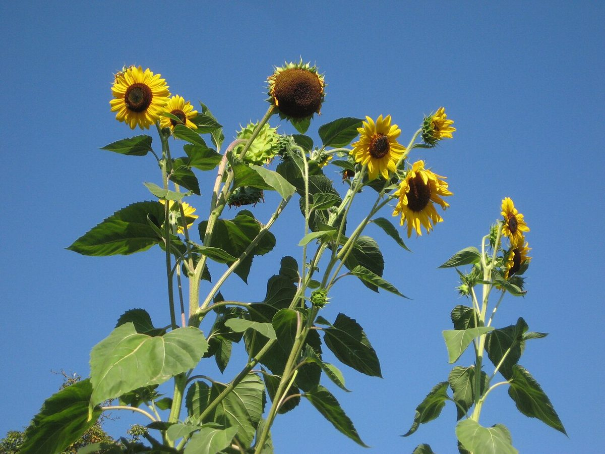

店のこと
店のこと
お店について確認できているのは、所在地・電話番号・Instagramのアカウントです。
確認できていること
- 店名は「陽葵 ひまり」、業種はカフェ
- 所在地は群馬県館林市新宿1丁目12-10(〒374-0026)
- 電話番号は0276-58-0266
- Instagramのアカウントがある
- 営業時間・定休日・メニュー・価格・ご予約・駐車場は準備中

想像してみる
種のならびを見るように
以下は制作側の想像で、お店の実際の姿・考え・メニューとは関係ありません。名前の由来も分かりません。
制作側は、ひまわりの花の中心に細かな種が整然と並ぶ様子から、小さなものが少しずつ回りながら並ぶ、というこのサイトの作りを思いつきました。お店がどんな場所なのかは、Instagramで確かめてみたいと思っています。
